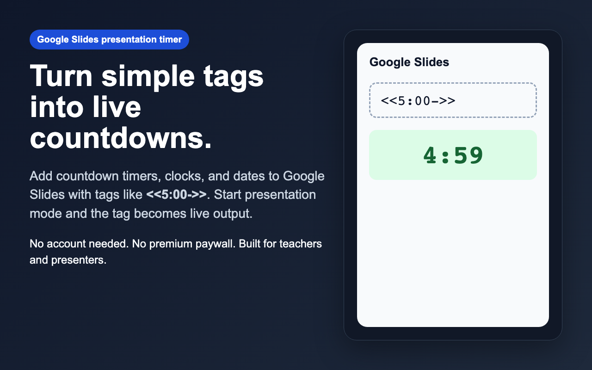
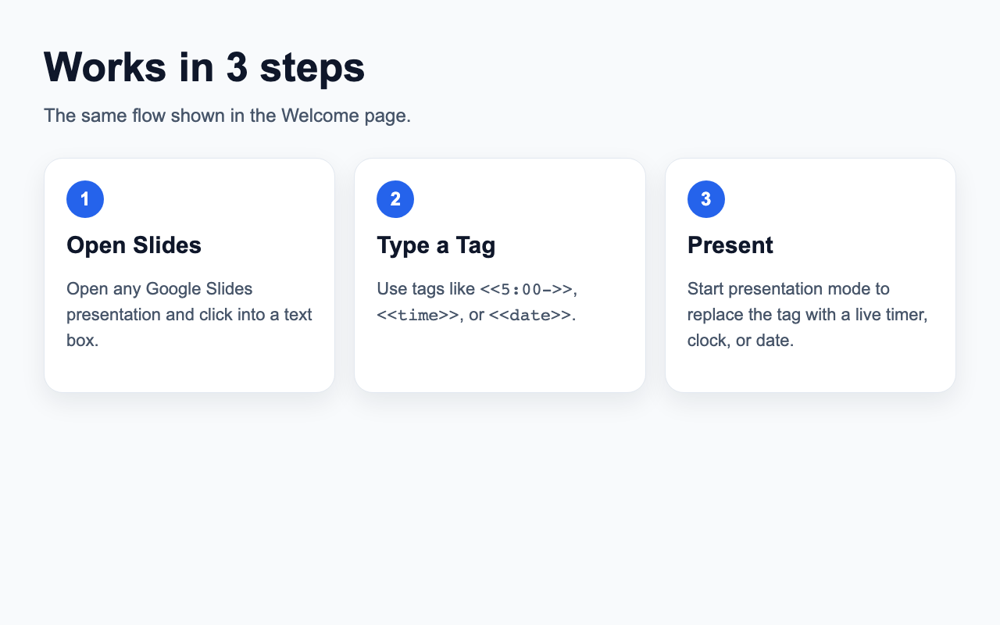
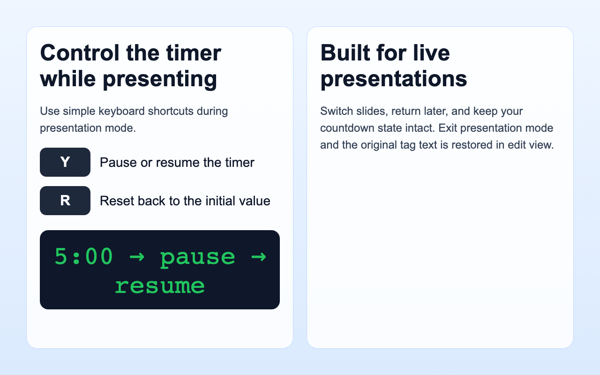

How to Add a Countdown Timer to Google Slides (2026 Guide)
<<5:00->> into any text box, and start presentation mode. Slides Timer replaces the tag with a live countdown. You can also use <<time>> for a clock and <<date>> for a date.
Why people search for a Google Slides timer
Teachers, workshop hosts, and presenters often need a visible timer without switching to a separate app or browser tab. The problem is that Google Slides does not have a built-in live countdown block. Most people end up juggling a separate timer window or embedding something clunky.
A timer extension solves that by letting you keep the timer directly inside your slide deck. That means less context switching and cleaner delivery during a classroom session, workshop, or timed meeting agenda.
Step 1: Open your Google Slides deck
Open any Google Slides presentation and click into the text box where you want the timer to appear. This can be a title box, subtitle box, or any regular text element.

Step 2: Type a timer tag
Use one of these tags:
<<5:00->>for a 5-minute countdown<<2:00+>>for a stopwatch<<time>>for the current time<<date>>for the current date
You can place multiple tags on the same slide or even in the same text box if you want surrounding text to remain visible.
Step 3: Start presentation mode
This is the critical part: the live timer appears only during presentation mode. In edit mode, you should still see the original tag text.
Once you present, the extension replaces the tag with live output. That is what makes it safe to keep your slides editable while still showing a real timer to your audience.

Step 4: Control the timer while presenting
While presenting, use:
- Y to pause or resume
- R to reset back to the initial value
This is useful when a discussion runs long or you need to restart the countdown for the next activity.

Common mistakes
“The timer is not working.”
The most common cause is staying in edit mode. The timer renders only during presentation mode.
“I still see the tag text.”
That is expected before presenting. The raw tag is the editable source; the rendered timer shows only while the presentation is live.
“Can I use a clock and a timer together?”
Yes. You can place multiple tags on the same slide and they update independently.
FAQ
Does Slides Timer need an account?
No. The extension is designed to work locally in the browser without requiring account setup.
Can I use it for classroom activities?
Yes. That is one of the main use cases: timed writing, group discussion, quiz rounds, and workshop pacing.